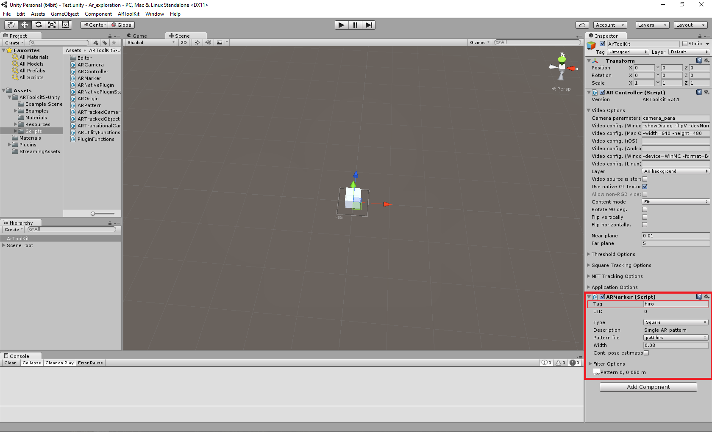
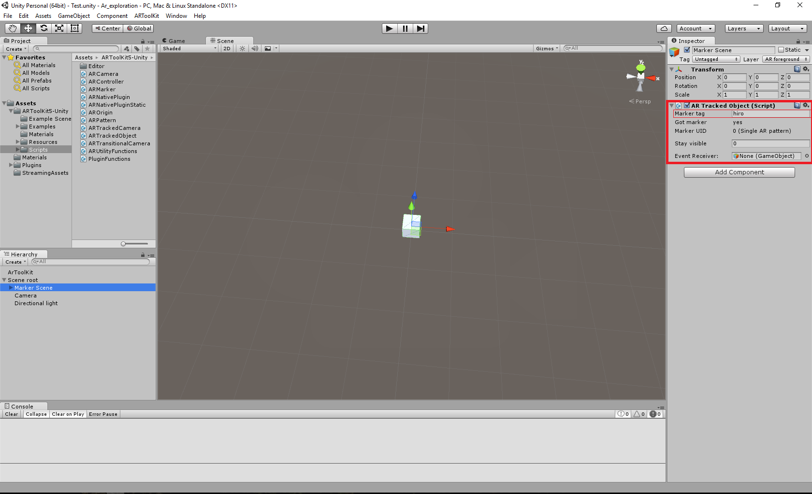
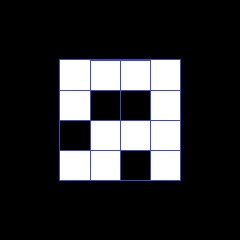

25 Janvier 2016
ArToolKit et Unity
Création d'un projet
William a créé un projet Unity pour y intégrer le module d’ArToolKit. Il a créé une scène et y a ajouté toutes les composantes nécessaires pour le bon fonctionnement d’un environnement de réalité augmentée simple.
Exploration des composantes d'un projet ArToolKit
ArController
L’ArController sert à gérer la scène ArToolKit. Plus précisément, il gère l’objet singleton ArToolKit. C’est avec l’ArController qu’on peut définir les couches visibles à la caméra. Après la configuration de ce composant, nous sommes en mesure de voir un flux vidéo.

ArOrigin
L’ArOrigin définit le centre du monde qui s’affichera sur la vidéo. On l’appelle aussi la racine de la scène et est généralement placé au point (0, 0, 0) dans la scène Unity.
ArMarker
L’ArMarker représente le marqueur de l’image qui sera détecté lors de la capture vidéo. C’est dans cette composante qu’on définit le « Marker Tag » qui sera associé au marqueur et le modèle qui se retrouve sur le marqueur. On peut aussi lui indiquer la taille des bordures du marqueur.
ArTrackedObjcet
Représente l’objet ou les objets qui seront affichés à l’écran lorsque le marqueur est devant la caméra. Il suffit d’inscrire le « Marker Tag » définit plus haut dans « l’ArMarker », ceux-ci seront alors liés. Donc, tous les objets se trouvant dans une composante « ArTrackedObject » qui est définie par un « Marker Tag » seront affichés sur le marqueur.
ArCamera
Comme le nom l’indique, c’est une caméra ! En fait, c’est une composante qu’on ajoute à la caméra de la scène. Il n’y a rien de bien spécial avec cette caméra, mis à part le fait qu’elle permet de transformer la caméra de la scène en caméra de réalité augmentée. Donc, la caméra devrait tourner lorsqu’on tourne le marqueur.
** Ici, il faut bien comprendre que la caméra en question est une caméra virtuelle, se trouvant dans la scène.
À noter
L’Élément qui contient les composantes dans une scène de réalité augmentée se doit d’avoir une rotation de 90 dans l’axe des X. ce faisant, l’objet qu’on veut afficher aura l’angle désiré. C’est un des petits points inexpliqués que nous amène ArToolKit. Mais bon, ça rajoute du défi de devoir contourner des petites embuches comme celle-ci ! :)
Les Marqueurs
Vincent a recherché au sujet des marqueurs à savoir quel type était le plus performant a trait à sa capacité de reconnaissance et son rayon d’action. En effet, un marqueur peut avoir 2 caractéristiques distinctes : sa taille et le motif en son centre. Vincent a trouvé que le type de marqueur le plus approprié pour la situation serait un marqueur d’environ 10 CM, respectant les proportions définies comme suit : ¼ Noir, ½ Mofit, ¼ Noir. Exemple des proportions :
Pour ce qui est du motif intérieur, Vincent a trouvé que certains types de motifs étaient plus performants que les autres. En effet, un motif dessiné à la main ou qui comporte une grande quantité de détails risque d’être plus difficile à détecter par la caméra. Le choix s’est arrêté sur une grille pixélisée de 4x4 pixels, ce qui offre une grande marge de manouvre pour faire des motifs simple et facilement détectable tout en offrant une grande diversité de motifs. Chaque case de la grille peut être noire ou blanche. Exemple d’une grille 4x4 du motif du marqueur :

L'éclairage
Lorsque la caméra essaie de détecter le marqueur, la luminosité a beaucoup d’influence sur la qualité de reconnaissance. Vincent a trouvé qu’une source unique de lumière est a éviter car elle offre plus de risque d’ombrages et de reflets non-désirés. En effet, l’option la plus efficace est une lumière diffuse aux sources multiples, réduisant ainsi les ombrages et les focus de lumières sur le marqueur.
Les Matériaux
Pour augmenter les performances de détection du marqueur, Vincent a trouvé que le matériel utilisé pour supporter le marqueur a beaucoup d’importance. Une feuille de velours placée sous le marqueur aura pour effet d’absorber la lumière ambiante au lieu de la réfléchir comme le ferait une feuille blanche.